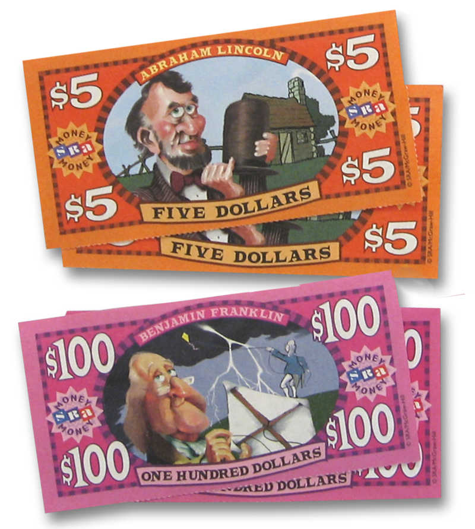
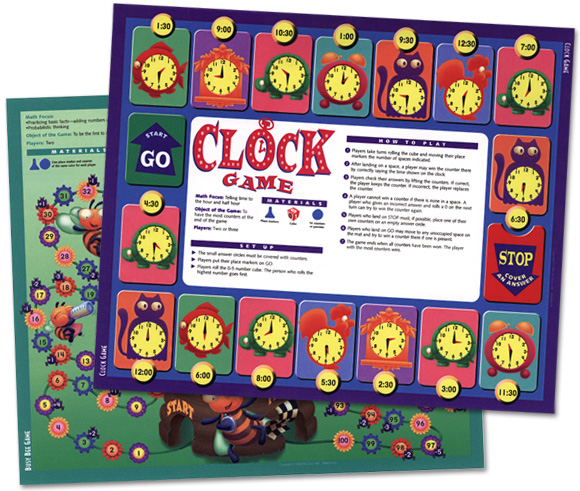
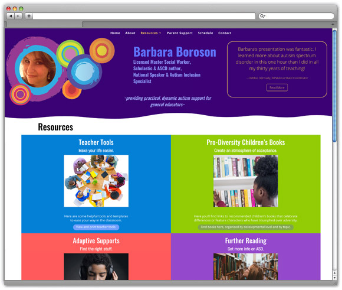
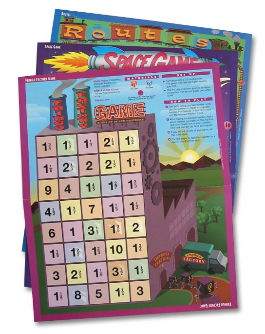

This author and national speaker had an existing site that needed a full upgrade with a new web hosting system. We considered many systems from SquareSpace to WordPress and decided to use WordPress. Before starting this new site for the client we had to pick managed hosting service that could best handle a WordPress site and then create a new account, point the url to the hosting service and deal with any email issues a well.
The client needed a website to profile her dynamic expertise and multiple books about caring for children on the spectrum. After much experimentation, the author asked to use the color palette and abstract imagery from her first book and suggested putting her image in the circle motif from the book cover. This was a great solution.
Once the header design with a carousel for testimonials was finished, many sub-pages were created to help organize the site info, including a single page with toggles organizing over 100 books for young readers.
www.barbaraboroson.com
Client: Author-Educator Website
Services: Branding, Web Design, Web Development
Year: 2020-Present

Optional caption


Optional caption
